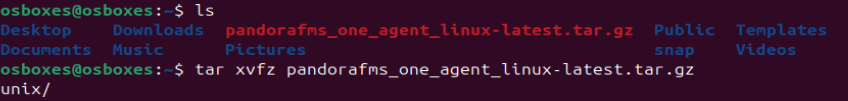

Configuración del Ubuntu Server
Instalación de Pandora FMS
- Obtener script
Usando el siguiente comando obtendremos el script que nos instalará Pandora FMS
curl -SsL https://pfms.me/deployenterprise
- Instalación de PandoraFMS
Antes de empezar con la instalación comentaremos la linea que se encuentra en /etc/apt/source.list
Una vez comentada la linea le daremos permisos al script

Luego crearemos la variable PANDORA_LTS a la cual le asignaremos el valor de 1 y ejecutaremos el script desde root

- Finalizar instalacion en el navegador
Una vez hecha la instalación nos aparecerá la ip con su usuario y contraseña para poder acceder a Pandora desde el navegador
http://192.168.122.254/pandora_console

Configuración de Pandora FMS
- Creación de agentes
Vamos a instalar en los clientes Ubuntu y Windows agentes para poder monitorizarlos.
Nos descargamos de la pagina oficial de pandora el paquete pandorafms_one_agent_linux-latest.tar.gz, lo descomprimimos, buscamos el paquete de pandora_agent_installer dentro de la carpeta unix y lo instalamos.
https://pandorafms.com/manual/!current/en/documentation/pandorafms/technical_annexes/32_pfms_install_software_agent
tar xvzf pandorafms_one_agent_linux-latest.tar.gz
cd unix/
./pandora_agent_installer --install


Una vez descomprimido e instalado editamos el fichero /etc/pandorafms/pandora_agent.conf, donde pondremos la ip del servidor de pandora.

Iniciamos el agente y esperamos a que nos aparezca en nuestro Pandora.
sudo systemctl start pandora_agent_daemon